CytoSEE Tutorial
-
CytoSEE: a web-based toolkit for automatic computation and evaluation of cytometry data.
-
CytoSEE:, a web-based cytometry tool for preprocessing, clustering, visualization and auto-labeling.
- Clustering methods: To deal with large-scale dataset, we developed a method called Consboost, which combines consensus clustering and AdaBoost. In addition, we also integrated other 4 algorithms with high performance to fit different situations.
- Cell labeling: we wrote the module called PhenoCL, which can predict the cell ontology based on the marker expression.
- Visualization: We introduced multiple methods like t-SNE, largeVis, MST and heatmap to illustrate the results in many aspects.
- Periodic update: CytoSEE will update regularly.
-
1 Single File Analysis
-
1.1 File Upload
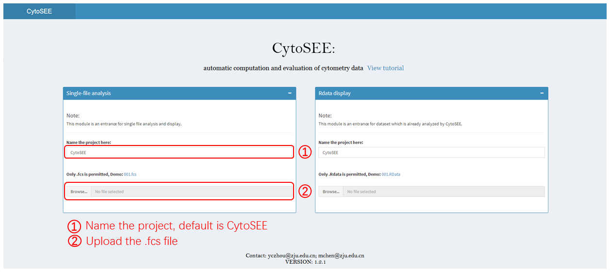
-
1.2 Data Preview
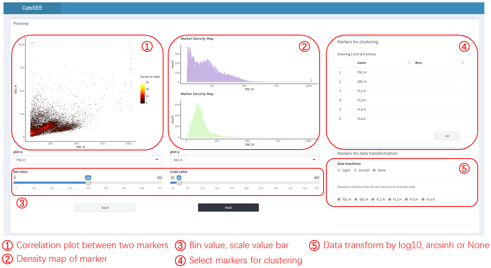
-
1.3 Quality control
-
1.3.1 Quality control manually
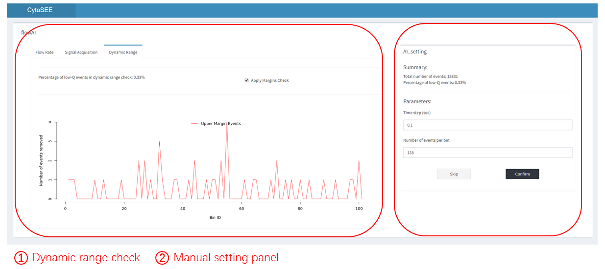
-
1.4 Cell clustering
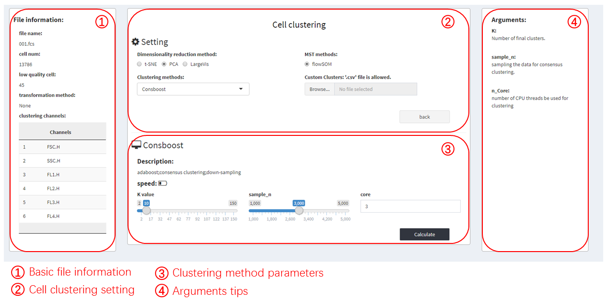
-
1.5 Cluster Label Generation
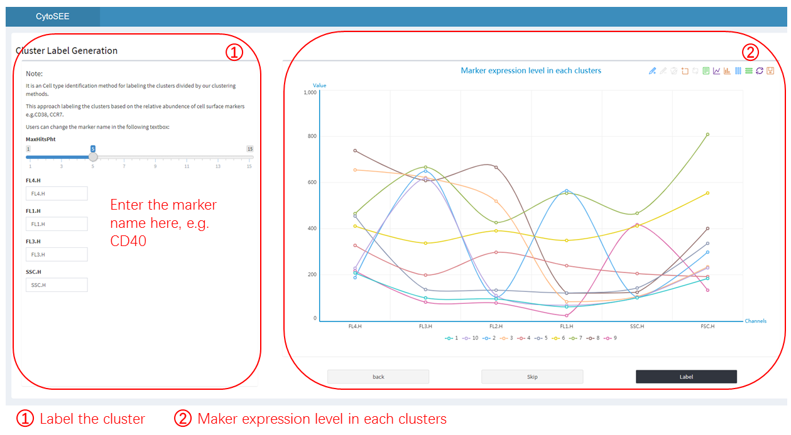
-
1.6 Divisive marker tree Generation
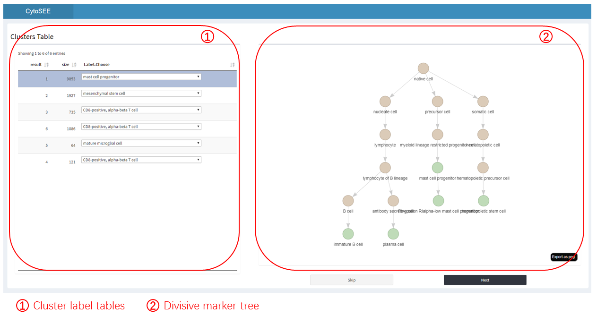
-
1.7 Clusters label information
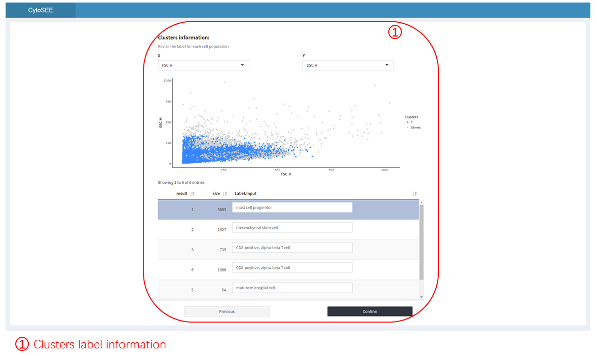
-
1.8.1 Visualization -- Scatter Plot
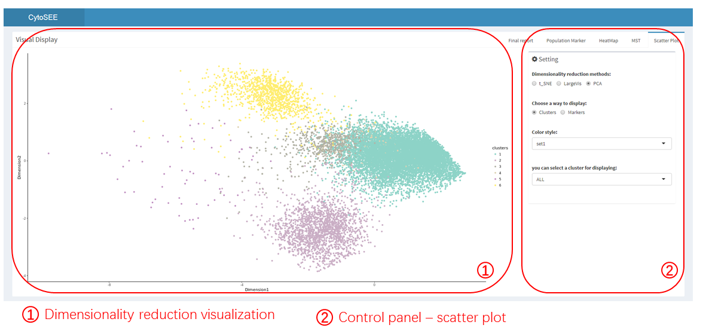
-
1.8.2 Visualization -- Minumum Spanning Tree Plot

-
1.8.3 Visualization -- Heatmap
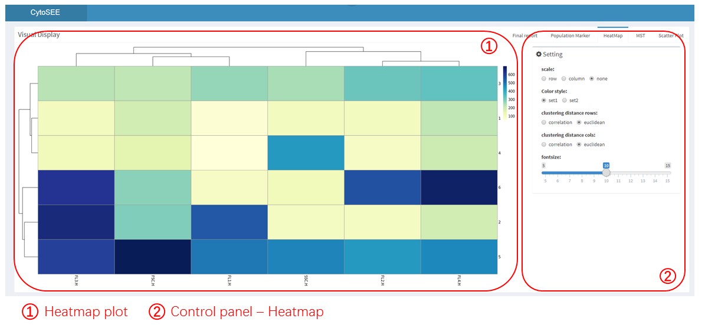
-
1.8.4 Visualization -- Population Marker
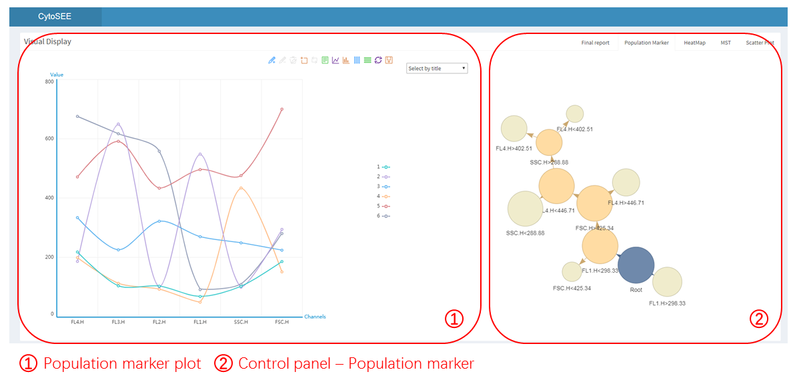
-
1.8.5 Visualization -- Project information report
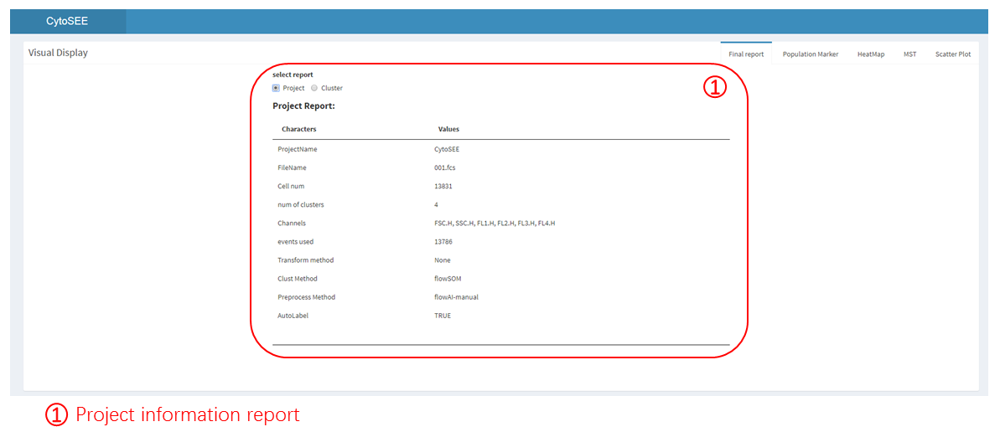
-
1.8.6 Visualization -- Cluster information report

-
2 Rdata Display
-
2.1 File Upload
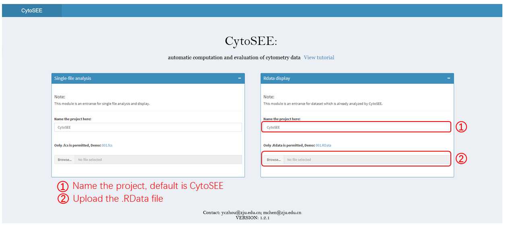
-
Remaining step refer to the Step 1.5